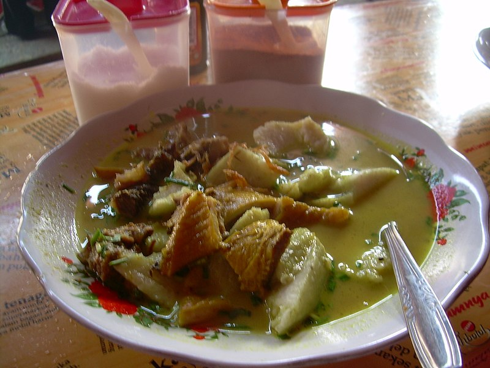
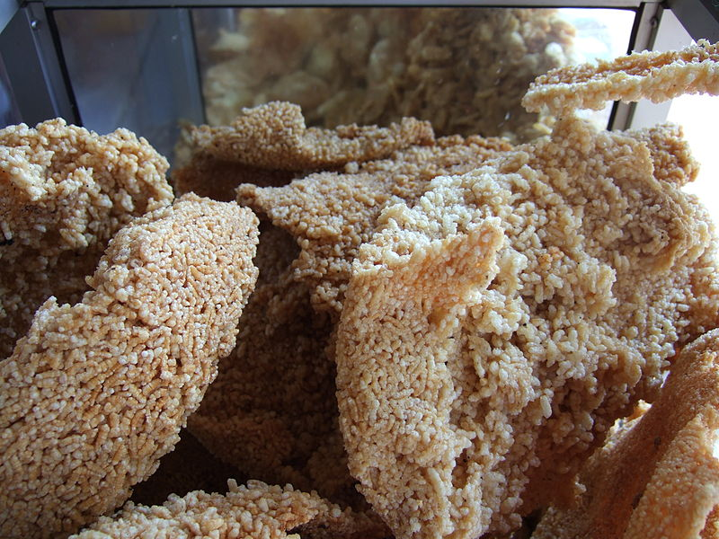
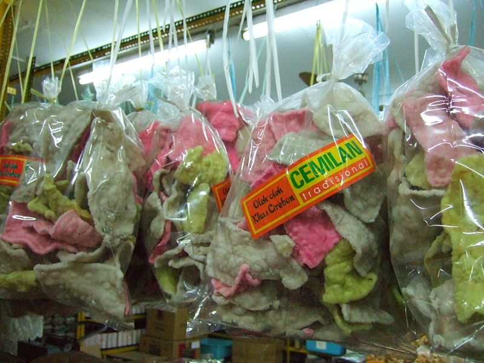
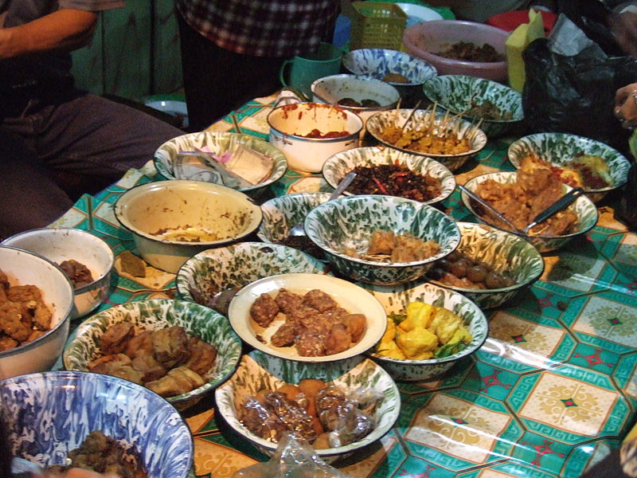
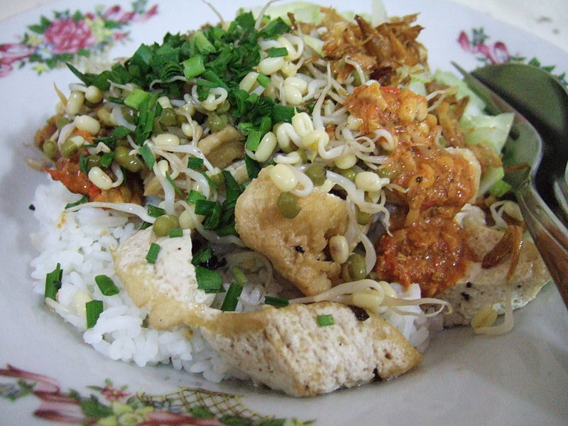
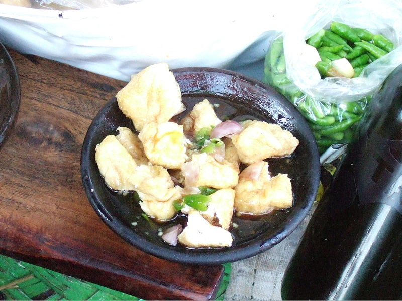

Sejarah
Diawali dari kisah Kerajaan Pajajaran, yang kala itu diperintah oleh
Sri Baduga Maharaja. Ia menikah dengan Nyai Subang Larang dikarunia
2 (dua) orang putra dan seorang putri, Pangeran Walangsungsang yang
lahir pertama tahun 1423 Masehi, kedua Nyai Lara Santang lahir tahun
1426 Masehi. Sedangkan Putra yang ketiga Raja Sengara lahir tahun
1428 Masehi. Pada tahun 1442 Masehi Pangeran Walangsungsang menikah
dengan Nyai Endang Geulis Putri Ki Gedheng Danu Warsih dari
Pertapaan Gunung Mara Api.Mereka singgah di beberapa petapaan antara
lain petapaan Ciangkup di desa Panongan (Sedong), Petapaan Gunung
Kumbang di daerah Tegal dan Petapaan Gunung Cangak di desa Mundu
Mesigit, yang terakhir sampai ke Gunung Amparan Jati dan disanalah
bertemu dengan Syekh Datuk Kahfi yang berasal dari kerajaan Parsi.
Ia adalah seorang Guru Agama Islam yang luhur ilmu dan budi
pekertinya. Pangeran Walangsungsang beserta adiknya Nyai Lara
Santang dan istrinya Nyai Endang Geulis berguru Agama Islam kepada
Syekh Nur Jati dan menetap bersama Ki Gedheng Danusela adik Ki
Gedheng Danuwarsih. Oleh Syekh Nur Jati, Pangeran Walangsungsang
diberi nama Somadullah dan diminta untuk membuka hutan di pinggir
Pantai Sebelah Tenggara Gunung Jati (Lemahwungkuk sekarang). Maka
sejak itu berdirilah Dukuh Tegal Alang-Alang yang kemudian diberi
nama Desa Caruban (Campuran) yang semakin lama menjadi ramai
dikunjungi dan dihuni oleh berbagai suku bangsa untuk berdagang,
bertani dan mencari ikan di laut.
Demografi
Cirebon merupakan salah satu kabupaten terpadat di Jawa Barat.
Penduduk Kabupaten Cirebon terus bertambah, meski demikian dari
sensus ke sensus, tren rata-rata laju pertumbuhan penduduk dari
sensus ke sensus semakin melambat. Pada Tahun 1980 jumlah penduduk
Kabupaten Cirebon baru berjumlah 1.331.690 jiwa dan pada tahun 1990
tercatat 1.648.021 jiwa. Sepuluh tahun kemudian pada tahun 2000
penduduk Kabupaten Cirebon menjadi 1.931.068 jiwa. Hasil sementara
dari pengolahan data SP2010-L1.P212, SP2010-C2, dan SP2010-L2
(kondisi 15 Juli 2010) sebesar 2.065.142 jiwa dengan komposisi
1.057.501 jiwa penduduk laki-laki dan 1.007.641 jiwa penduduk
perempuan. Menurut angka sementara hasil Sensus Penduduk Indonesia
2010, Kecamatan Sumber merupakan wilayah dengan jumlah penduduknya
paling banyak yaitu sebesar 80.914 jiwa dan berikutnya adalah
Kecamatan Gunungjati yaitu sebanyak 77.712 jiwa. Sedangkan wilayah
dengan jumlah penduduk paling sedikit di Kabupaten Cirebon adalah
Kecamatan Pasaleman yaitu sebanyak 24.912 jiwa dan Kecamatan
Karangwareng sebanyak 26.554 jiwa. Sesuai dengan data kependudukan
terbaru yang sudah diberikan oleh Dinas Kependudukan dan catatan
Sipil (disdukcapil) Kab.Cirebon, jumlah penduduk Kab.Cirebon per 30
April 2013 berjumlah 2.957.257 jiwa.
Budaya
Kebudayaan yang melekat pada masyarakat Cirebon merupakan perpaduan
berbagai budaya yang datang dan membentuk ciri khas tersendiri. Hal
ini dapat dilihat dari beberapa pertunjukan khas masyarakat Cirebon
antara lain Tarling, Tari Topeng Cirebon, Wayang Kulit Cirebon,
Sintren, Kesenian Gembyung, dan Sandiwara Cirebonan. Kabupaten ini
juga memiliki beberapa kerajinan tangan di antaranya Topeng Cirebon,
Lukisan Kaca, Bunga Rotan, dan Batik. Salah satu ciri khas batik
asal Cirebon yang tidak ditemui di tempat lain adalah motif Mega
Mendung, yaitu motif berbentuk seperti awan bergumpal-gumpal yang
biasanya membentuk bingkai pada gambar utama. Motif Mega Mendung
adalah ciptaan Pangeran Cakrabuana (1452-1479), yang hingga kini
masih kerap digunakan. Motif tersebut didapat dari pengaruh
keraton-keraton di Cirebon. Karena pada awalnya, seni batik Cirebon
hanya dikenal di kalangan keraton. Sekarang di Cirebon, batik motif
mega mendung telah banyak digunakan berbagai kalangan. Selain itu
terdapat juga motif-motif batik yang disesuaikan dengan ciri khas
penduduk pesisir.
Wisata
Wisata Belanja
Batik Trusmi
Di Desa Trusmi dan Panembahan, dapat dijumpai banyak home industry
yang menjual batik khas Cirebon. Sentra batik ini akan lebih ramai
pada akhir pekan oleh pembeli yang datang dari luar kota dan luar
negeri. Motif batik yang terkenal dari kawasan ini adalah motif Mega
Mendung.
Pasar Kue Setu
Pasar Kue Setu terletak di Kecamatan Plered. Kue-kue yang
penjualannya tersebar hingga ke hampir seluruh Indonesia dan
kebanyakan berupa camilan ini diproduksi oleh industri rumahan di
Desa Setu dan sekitarnya. Camilan khas Cirebon yang sangat cocok
dijadikan oleh-oleh ini mayoritas bernama unik, di antaranya kerupuk
kulit kerbau/rambak, kerupuk melarat, kerupuk geol, kerupuk upil,
kerupuk gendar, kerupuk jengkol, jagung marning, rengginang mini,
emping, kelitik, kue atom, maypilow, kembang andul, ladu, simpil,
gapit, otokowok, opak, welus, sagon, dan masih banyak lagi. Di
sekitar Plered, banyak pula ditemui penjual sandal karet, yang
penjualannya sudah menyebar ke seluruh Nusantara.
Wisata Ziarah
- Makam Sunan Gunung Jati
- Situs Batu Tulis huludayeuh
- Petilasan Cimandung
- Situs Pasanggrahan Balong Biru
- Balong Keramat Tuk
- Makam keramat Megu
- Situs Lawang Gede
- Makam Nyi Mas Gandasari
- Makam Syekh Magelung Sakti
- MMakam Talun
- Makam Buyut Trusmi
- Makam P. Jakatawa dan Syekh Bentong.
Wisata Alam
Situ Patok
Luas Situ Patok 175 Ha yang terletak di Desa Setu Patok sekitar 6 km
dari Kota Cirebon ke arah Tegal, objek wisata ini selain mempunyai
panorama indah juga tersedia sarana rekreasi air dan pemancingan.
Lokasi ini berpotensi untuk dikembangkan sekitar lahan 7 Ha, dengan
status tanah negara. prasarana yang diperlukan adalah pembuatan
dermaga, pengadaan perahu motor, sarana pemancingan, serta
pembangunan rumah makan yang artistik. Jalan ke arah lokasi cukup
baik dan lebar, jaringan aliran listrik sudah tersedia dan saat ini
minat masyarakat untuk mengunjungi wisata ini cukup banyak.
Belawa
Lokasi wisata ini berjarak kira-kira 25 km dari Kota Sumber ke arah
timur. Objek wisata ini memiliki daya tarik dari kura-kura yang
mempunyai ciri khusus di punggung dengan nama latin Aquatic Tortose
Ortilia Norneensis. Menyimpan legenda menarik tentang keberadaannya
di Desa Belawa, Kecamatan Lemahabang. Menurut penelitian merupakan
spesies kura-kura yang langka dan patut dilindungi keberadaannya.
Objek wisata ini direncanakan untuk dikembangkan menjadi kawasan
yang lebih lengkap, yaitu taman kura-kura (turle park) atau taman
reptilia.
Hutan Wisata Plangon
Objek wisata plangon berlokasi di Desa Babakan Kecamatan Sumber ± 10
km dari Kota Cirebon. Tempat rekreasi dengan panorama alam indah
yang dihuni oleh sekelompok monyet liar. Selain selain tempat
rekreasi, terdapat juga makam Pangeran Kejaksan dan Pangeran
Panjunan. Puncak acaranya biasa di masa ziarah Plangon tanggal 2
syawal, 11 Dzulhijjah, dan 27 Rajab. Untuk pengembangan wisata ini
meliputi lahan sekitar 10 Ha, dan status tanah ini milik Kesultanan.
Kapasitas pengunjung rata-rata sekitar 58.000 pengunjung/tahun.
Namun ada larangan, demi keselamatan pengunjung, diharapkan
pengunjung tidak memberi makan monyet-monyet liar.
Galeri Kuliner

empalgentong

intip

Krupuk mlarat

Sega Jamblang

Sega Lengko

Tahu Gejrot